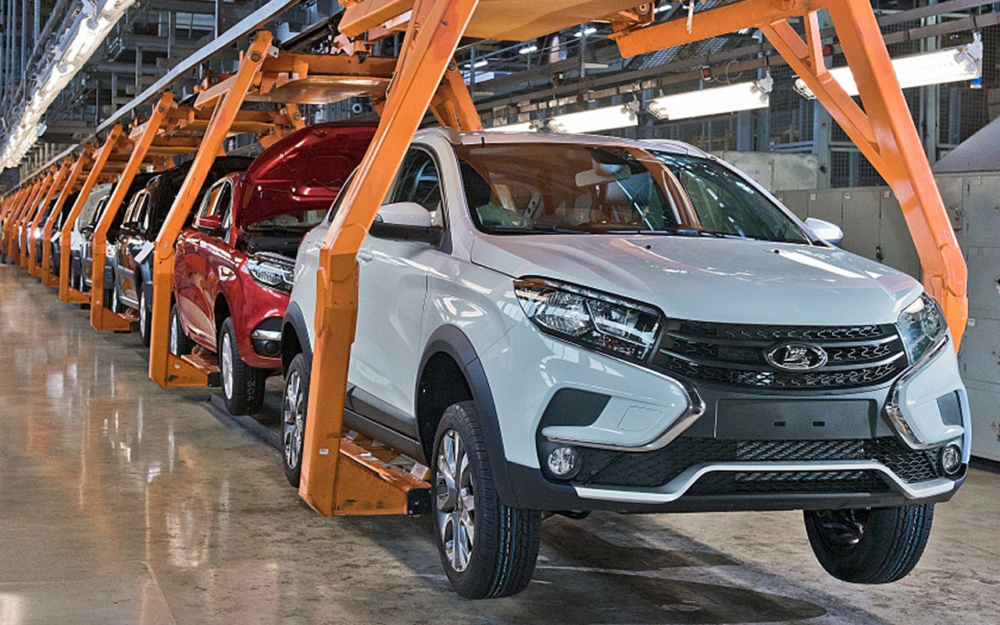
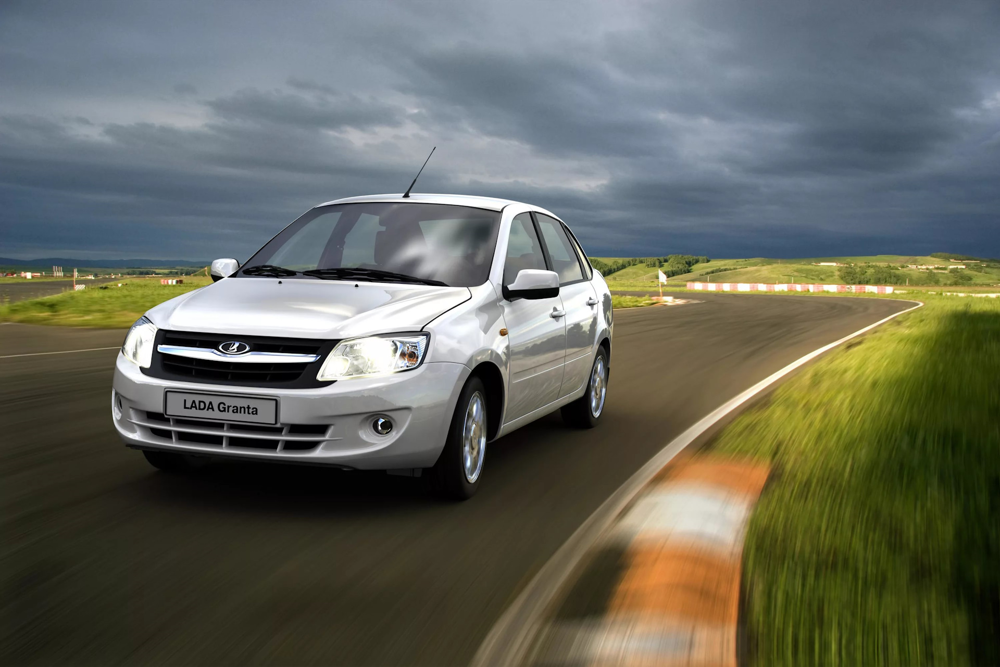
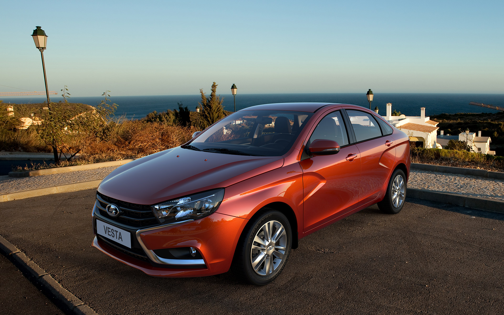
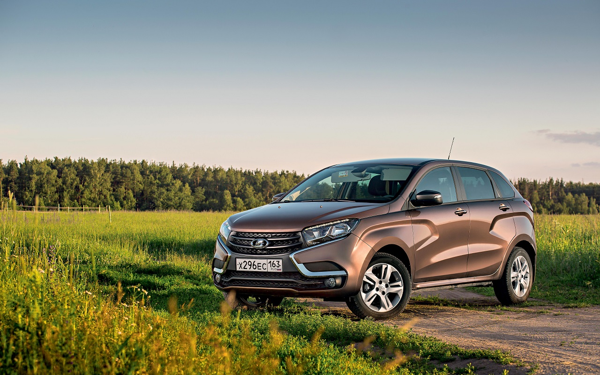
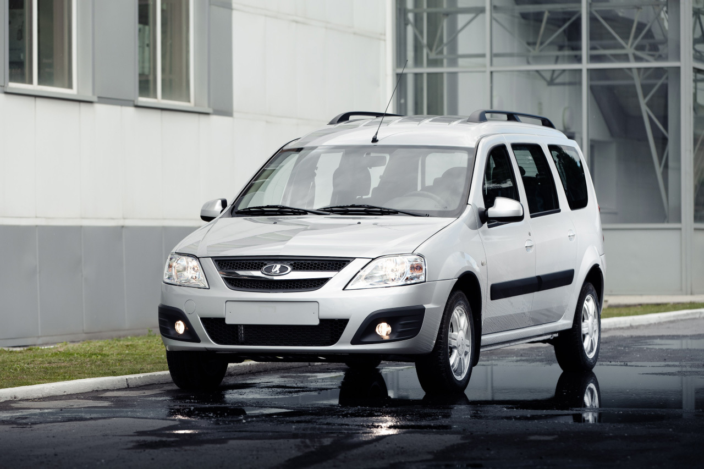
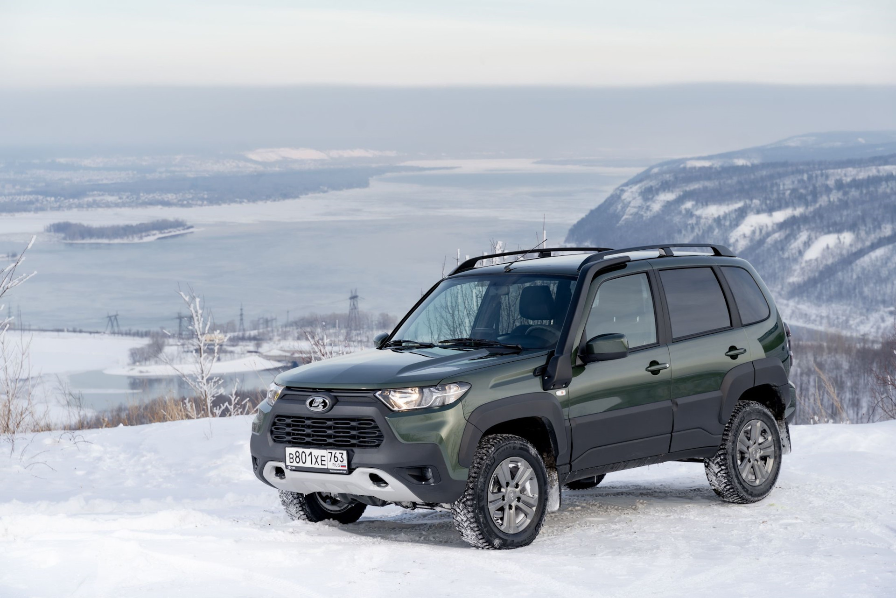
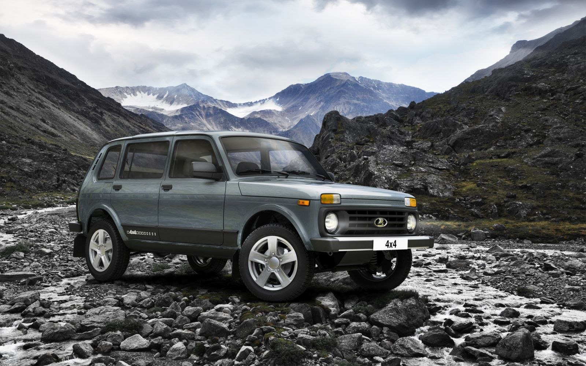

Автоваз - лучшее что с вами случалось!
 Ссылка на сайт автовазаВыбери свою мечту!
1. Lada Granta
LADA Granta не нужно кому-то что-то доказывать. Она уже заслужила доверие более миллиона автомобилистов и прошла проверку нашими дорогами. Не адаптированная, а разработанная специально для российских условий, LADA Granta уверена в себе на каждом километре пути. Увеличенные ходы подвесок, специальные настройки шасси и множество современных технологий делают поездки комфортными и безопасными. А благодаря широкой дилерской сети и трехлетней гарантии владельцам LADA Granta обеспечена постоянная поддержка в любом уголке страны.
2.Lada Vesta
Со временем привыкаешь к красоте. К идеальным пропорциям, к сбалансированному силуэту. К каждой выверенной и законченной линии. Но LADA Vesta умеет вызывать эмоции снова и снова. Достаточно взглянуть под другим ракурсом. К примеру, через плечо, оставляя свой автомобиль на парковке.
3.Lada Xray
Экспрессивная пластика кузова и лаконичный силуэт. Лента светодиодов, заметная издалека… Этот автомобиль не потеряется в калейдоскопе городских улиц. Здесь он чувствует себя в своей стихии.
4.Lada Largus
Путешественник, партнер по бизнесу и член семьи — это LADA Largus: комфортный, яркий и функциональный.
5.Lada Niva Travel
Легендарный автомобиль гармонично смотрится и среди лесов, и на городских улицах. Чуть сглаженная угловатость, выразительные формы кузова, яркая светотехника, пластиковый обвес кузова — решительный характер автомобиля отражен в каждой детали.
6. Lada Niva Legend
LADA Niva Legend — автомобиль со всемирно известным дизайном, в котором продумана каждая деталь. Короткие свесы улучшают проходимость на пересечённой местности и позволяют безопасно парковаться вплотную к бордюрам. Компактный кузов — это удачное решение и для города, и для леса. А скругленные линии капота, дверей и колесных арок — классическое решение, актуальное всегда и везде.
Купить аксессуары